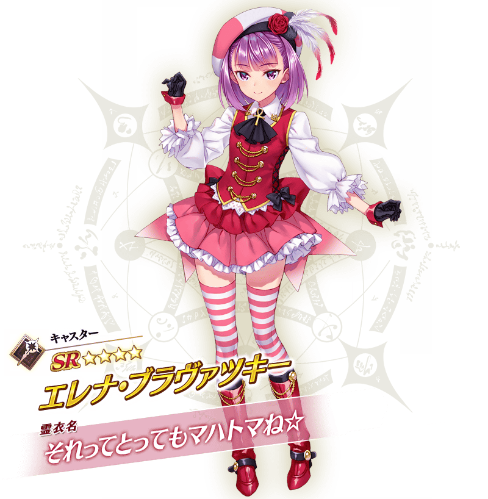
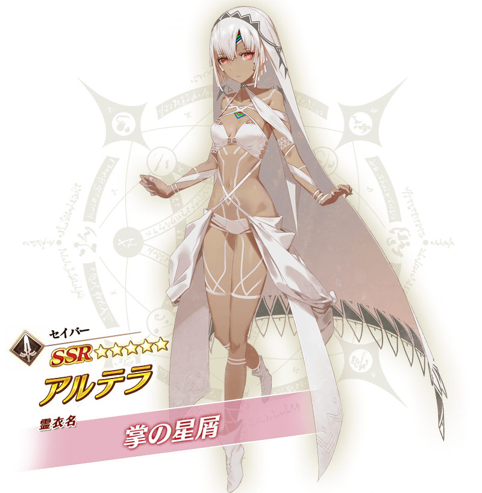
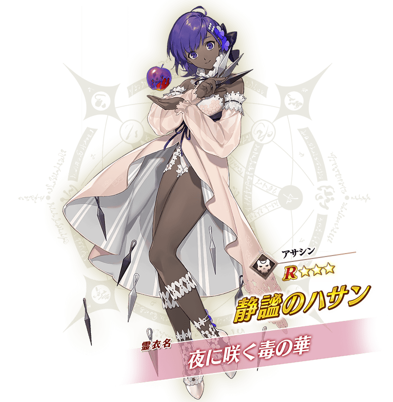

決定了「Fate/Grand Order Waltz in the MOONLIGHT/LOSTROOM×Fate/Grand Order聯動活動」的舉辦！
進行聯動活動的話，可讓活動限定從者「★4(SR)謎之偶像X〔Alter〕」正式加入。
※本頁面皆為開發中圖片。會有與實際圖片相異的情況。
「Fate/Grand Order Waltz in the MOONLIGHT/LOSTROOM×Fate/Grand Order聯動活動」中，全12位的新靈衣開放權登場！
本次從其中先行介紹，預定於本活動穿新靈衣登場的從者「★4(SR)海倫娜・布拉瓦茨基(Caster)」與「★3(R)瑪琇・基利艾拉特」2位的立繪。
關於剩餘10位從者的新靈衣，敬請期待預定在每週二17:00公開的續報！

◆【★4(SR)海倫娜・布拉瓦茨基(Caster)】靈衣影片的介紹◆
◆【★3(R)瑪琇・基利艾拉特】靈衣影片的介紹◆
【3月30日(二) 17:00更新】
介紹預定於「Fate/Grand Order Waltz in the MOONLIGHT/LOSTROOM×Fate/Grand Order聯動活動」穿新靈衣的登場「★5(SSR)阿提拉(Saber)」與「★4(SR)尼托克里絲(Caster)」2位的立繪！

◆【★5(SSR)阿提拉(Saber)】靈衣影片的介紹◆
【4月6日(二) 17:00更新】
介紹預定於「Fate/Grand Order Waltz in the MOONLIGHT/LOSTROOM×Fate/Grand Order聯動活動」穿新靈衣的登場「★5(SSR)女王梅芙(Rider)」與「★3(R)靜謐的哈桑」2位的立繪！
◆【★5(SSR)女王梅芙(Rider)】靈衣影片的介紹◆

◆【★3(R)靜謐的哈桑】靈衣影片的介紹◆